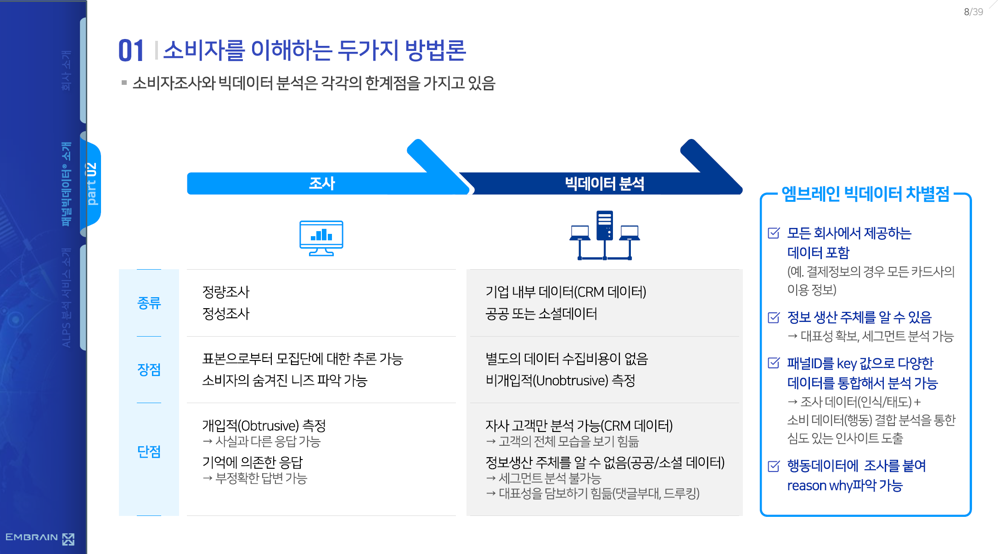
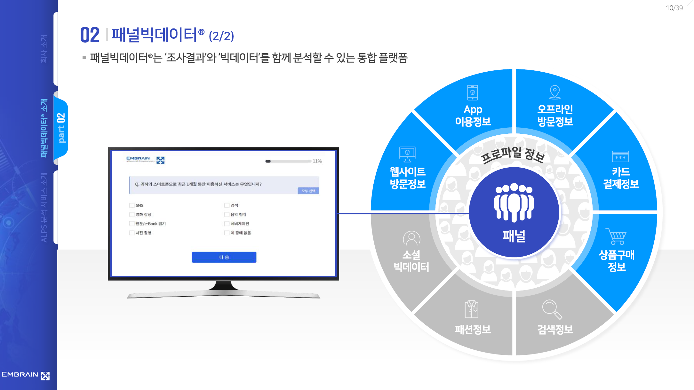
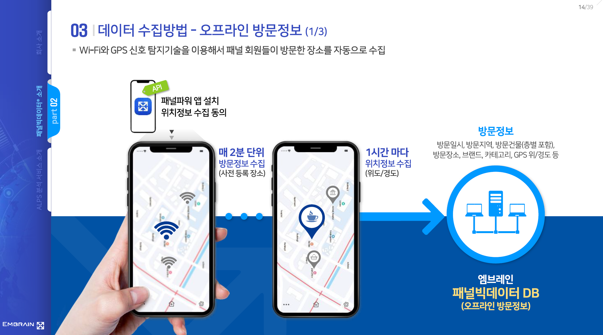
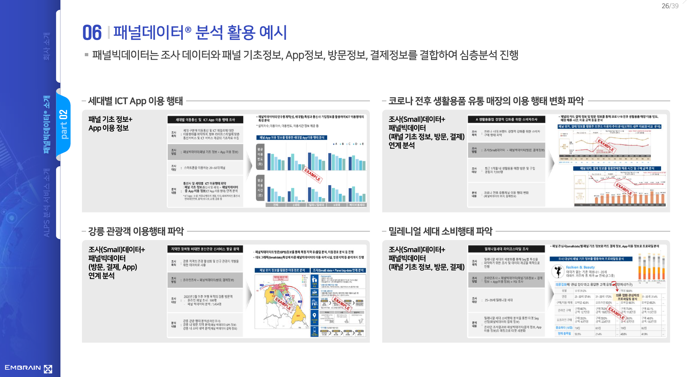

PBL
Final project
How to
Please let me know your team members by 7 April. (kakao talk, email)
Data
- Media Panel Dataset
- Download here: https://stat.kisdi.re.kr/kor/contents/ContentsList.html
Embrain big data
- Ask me to share the data
Cultural big data portal
Your own data
Team
Students organize teams that meet several conditions.
4~5 members in a team
Background diversity: no homogeneous majors in a team
Exception: Allowed if persuasion is possible for sufficient reasons
Data: Panel Big Data given EMBRAIN corp.
- If persuasion is possible with sufficient reasons, a project using other data can be used
Output
Data analysis report
Any format is possible (PPT, word, notion web page link, pdf, and so on).
Report example (but not limited)
Data Preparing (or Collecting)
Explore data (Descriptive stats)
Set your hypothesis (or research questions)
Visualize data to confirm your hypo or RQs
Explain your findings
Expanding your findings to implications
Presentation Video
Making videos for 10 mins presentation (in any language),
Submit a Youtube link
The best teams may lead to URP in the summer semester.
Final output examples in 2024
Team 1
Team 2
Team 3
Team 4
Team 5
Team 6
Team 7
About EMBRAIN’s panel bigdata: [pdf]
Due to the limitation of survey, we need a bigdata being collected from consumer
Panel bigdata
Panel: Panelists are survey respondents who have expressed their intention to participate in the survey in advance and provided personal information under a contract with the survey company.
Panel Big Data is an integrated platform that allows you to analyze surveys and big data together.
Including..
App using information
Visited locations (using WiFi & GPS detection technology)
Payment information
Basic demographics (gender, age, and so on)




Teams
(5) Flavien(AI), Kamin(AI), Roosa(DS), Leon Runge(DS), Nana Fukuchi(통계)
(5) 김유정(CT), 양신(CT), 김상호(AI), 전아영(독문), 김성은(한문)
(5) 이승혜(DS), 박하윤(DS), 장예덕(DS), 유예린(DS), 김채민(영상)
(5) 김채윤(DS), 오채원(DS), 이혜림(DS), 정진학(DS), 이수민(CT)
(5) 정함여(영문), 왕자문(행정), 이건화(스과), 강시호(DS), 천정인(통계)
(5) 김영웅(AI), 강소리(CT), 전효은(CT), 이하겸(CT), 한대현(CT)
(5) 고선욱(CT), 김나은(CT), 이현화(영문), 장희원(CT), 황수민(경영)
(4) Tan Gui Quan(DS), 김영서(사복), 김재언(글경), 현채은(글경)
(4) 서정원(DS), 김홍인(SW), 이찬희(AI), 김나연(AI)
(4) 채흔정(CT), 서염(사회), 송준혁(DS), 이정환(철학)